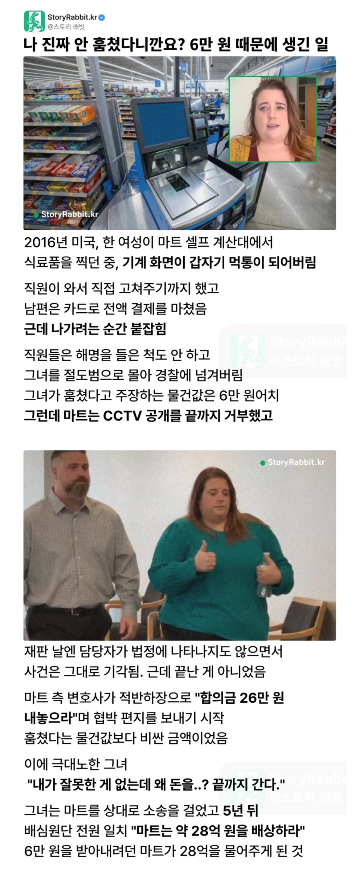

https://bbs.ruliweb.com/best/board/300143/read/76686841

https://bbs.ruliweb.com/best/board/300143/read/76686841

28억 쥐어주겠다고 멱살잡고 소리치는데
감사하게 받아야지
억대를 준다는데 병신이 아니고 기부천사 아니냐
악역은 익숙하니까..
그중에서도
세탁소에서 바지를 분실했다는 이유로
천달러 보상을 거부하고 600억소송을 건 판사가 제일이지
전설의 레전드
그거 누가 사실관계 짚어준 거 있었는데
1. 세탁소 부부는 전에도 판사 옷 분실해서 판사랑 사이가 안 좋았음. 판사는 이런 세탁소 이용하기 싫었지만, 가난해서 집 근처의 그 세탁소를 이용할 수밖에 없었음.
2. 세탁소에 고가의 바지 맡김. 세탁소는 분실했고, 판사가 오면 아직 수선 덜 끝났다 구라 치면서 안 주다가 걸림.
3. 판사"가" 세탁소"에게" 천달러 보상금을 요구했지만, 세탁소가 거부함. 판사가 단단히 빡쳐서 600억 소송 검.
4. 세탁소 부부가 이 일로 정신적 충격을 받아 세탁소 문 닫았다 하는데 여러 지점의 세탁소 중 하나 닫은 거.
판사가 600억 소송 건 게 잘했다는 게 아니고, 세탁소라고 잘한 건 없고 세탁소가 천달러 보상금 제시한 적도 없음.
와 뭐야 세탁소 사장이 부자고 판사가 거지였냐
판사햄... 직장도 잃었던데 이렇게 보니 넘나 억울하잖아!
찾아보니까 좀 다른데
예전에 분실했던적있고 돈도 줬음
여기서도 뭐 80달러 준다는데 따져서 150달러 받았다는 이야기가 있고
그 이후 또 분실사건이 생겼는데
세탁소 다른지점으로 가는 오배송이 있었고
바지 찾아옴
근데 자기꺼 아니다 시전
세탁소가 처음에 제안을 거부한건 맞는데
재판 진행하면서 합의시도를 몇차례했음 금액도 나쁘지않았고 근데 판사가 ㅈ까했음
결국 재판 끝까지갔고 적나라하게 까이면서 판결나옴
찾아볼 사람 없는줄알고 그냥 막 씨부리내 니글대로면 판사가 실직당할 이유가 1도 없는데 좀 꾸며낼거면 결말이랑 맞게 꾸며라
한국이었으면 끔찍하다. 시달리다 그냥 끝남
한국도 몇년전에 저런거보다 더한거 마트직원들 깜빵갔나그럼 할배들 계산잘못하고 나간거나 하나씩 쌔빈거로 협박해서 몇십배씩 합의금조로 뜯어내다가
인천연수경찰서는 구입 물품의 대금을 계산하지 않은 손님들에게 '경찰에 신고하겠다'고 협박해 최대 150배 이상의 금액을 받아 챙긴 혐의(공동공갈)로 마트 사장 A(59)씨와 종업원 등 8명을 불구속 입건했다고 30일 밝혔다.
경찰에 따르면 인천 남구에서 마트를 운영하는 A씨 등은 지난 2011년 2월15일부터 지난 9월15일까지 오이를 구매하며 깜빡하고 돈을 내지 않은 B(62·여)씨 등 49명을 상대로 상품 값의 100~150배를 받아내는 수법으로 총 3500만원을 챙긴 혐의를 받고 있다.
존니오래됐네
미국에서 저런거 한번 걸리면 진짜 로또 걸리는거 겠구나
달달하네
근데 28억은 어떻게 산출된금액이야
저런 사소한 사건으로 마트 그냥 문닫아야겠는데?
전혀 사소하지 않은데
기간때매 ㅈㄴ커진건가
징벌적 손해배상 제도 때문인듯?
5년 동안 끌었으니 상대방 비용 + 징벌적 손해배상 등등으로 산정한 듯
협박 편지 보내기 시작했다는 거 보면 이거도 들어간 듯
징벌적 손해배상은 낼 능력 보고 매겨짐.
사진상으로는 월마트임 ㅋㅋ
28억가지고 문닫진 않을듯
아 동내 마트가 아니라 월마트구나 그럼 저정도 물어줘야지 ㅋㅋㅋㅋ
변호사가 받는 비용이 27억쯤 될듯.
이게 징벌적 손해배상인가 ㄷㄷ
저게맞지
마트직원 : 약속대로 절반줘
마트측 변호사랑 절친임?
가끔 저런거보면 마트 임직원이랑 짜고 고객한명 데려와다가 공개 수치플 시키고 배상으로 수십억 주고 뒤에서 반띵 하는 상상함
분명 시도하는 사람 있을거야 나도 떠올린 아이디어인데
사실상 28억 이벤트한거아님?
28억원을 주고 싶었던거잖아 이정도면 ㅋㅋㅋ
?? : 어렵게 사는군요 도와드리죠
와.. 근데 이정도 시비로 28억이면 지리네
나도 겪고싶다
흑인들이 뭐 훔치면 얼마까지는 훈방조치로 풀려난다 했는데 여기서는 또 칼같이 잡는거로 나오고 뭐가 맞는거임?
주마다 다름
근데 카드계산을 했으면 카드계산 내역이 남았을텐데 왈가왈부할게 뭐가 있음? 변호사는 개빡대가리임?
이런거 나오면 항상 변호사 공짜 마케팅 같음 ㅋㅋ
실제 저돈 받았을까 궁금하긴함 약간 미국 방식이 징역도 100년 때리고 나중에 감옥 공간 부족하다고 가석방 때리고 병원비도 100억임 했다가 나중에 몇억으로 쇼부보고 그냥 딜교의 나라같아서 ㅋㅋㅋㅋ
저런 소송은 변호사가 몇프로인가 떼어가니까 변호사가 꼭 완납하게 만들거 같은데
음.. 5년에 28억이라..
금액만 보면 존나 큰데 5년 동안 스트레스를 견뎌야하네
와 로또네
캬 5년에 28억
저동네도 병신들 천지네